Short Description
“NecroSting” (solo project) is a 2D top-down puzzle game created in the Unity game engine (C#).
Background
This game was created for participation in “Jame Gam#40” (May 21, 2024 - May 26, 2024, hosted by itch.io). I had 6 days for development. The given game jam theme was “Necromancer.” In addition, a special object was announced for the jam, which developers could choose to integrate into their game as they saw fit: “Needle.” That is how my idea for “NecroSting” came about.
Gameplay
The player controls a necromancer who can bring their minions to life with the help of their needles, allowing the player to solve puzzles and progress through the game. A final boss awaits the player in the last level. Each level can be restarted with the R key.
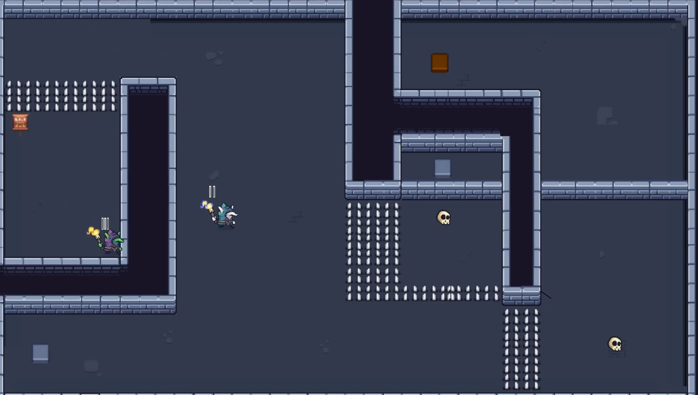
- Development & Technology -
Technical Details
- Engine: Unity
- Programmiersprache: C#
- Source control: None (manual backups only)
- Development time: 6 days (solo project)
Features
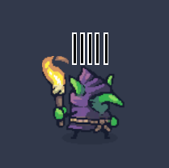
Necromancer (Player)
At the start of a level, the player controls only the necromancer. Left mouse button: fires NecroNeedles from the necromancer (player) toward the cursor position. The number of available NecroNeedles is displayed above the necromancer as simple black marks with a white outline.
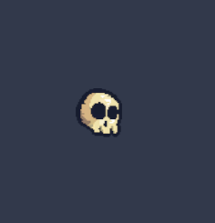
Minion (Asleep)
If the player hits an asleep minion with a NecroNeedle (left mouse button to fire), it wakes up. All awakened minions use the same movement input as the player, so all controllable characters move simultaneously.
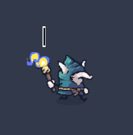
Minion (Awake)
Awakened minions can be controlled by the player. By right-clicking, controlled minions can fire their NecroNeedles toward the cursor. If a minion has no NecroNeedles left (the current count is shown above the minion), it returns to the asleep state. Minions use the same movement input as the player.
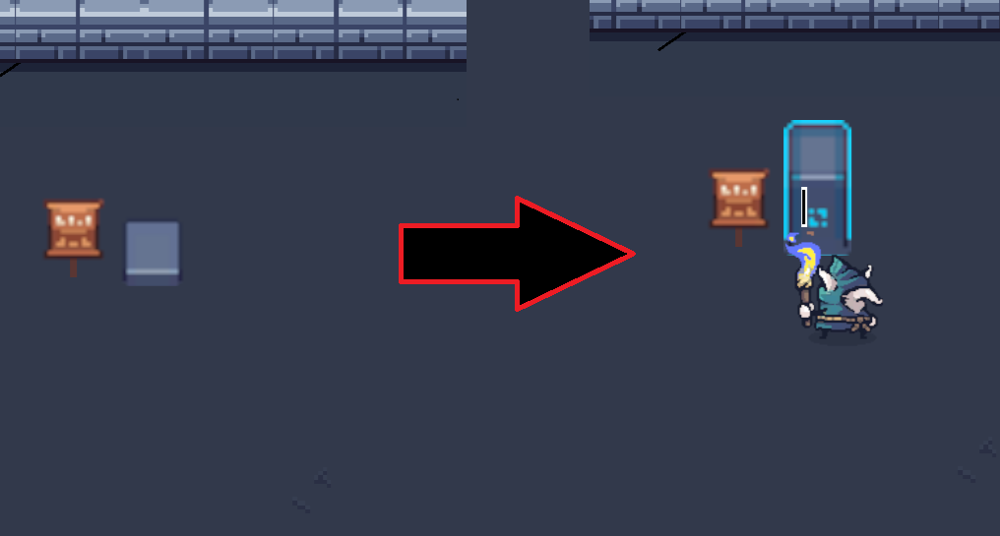
Activator Stone
As soon as a minion stands close enough to an activator stone, the stone activates. Activated stones affect the current level (for example, by removing obstacles).
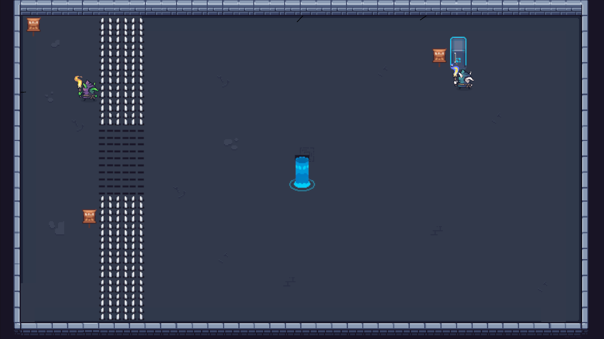
Portal
The goal in each level is to activate the portal and clear the path to it for the necromancer. Once the necromancer reaches the portal, the next level loads.
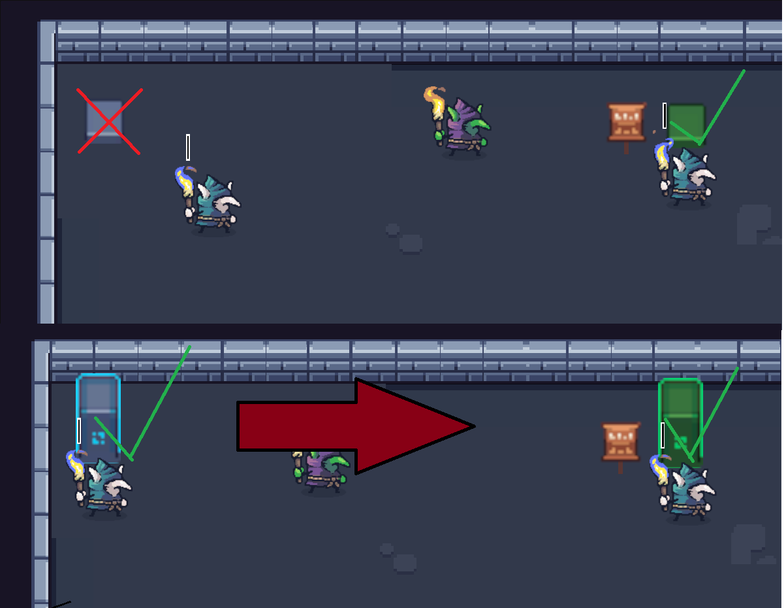
Activator Stone with Prerequisite
Some activator stones can only be activated if a specific other activator stone has already been activated.
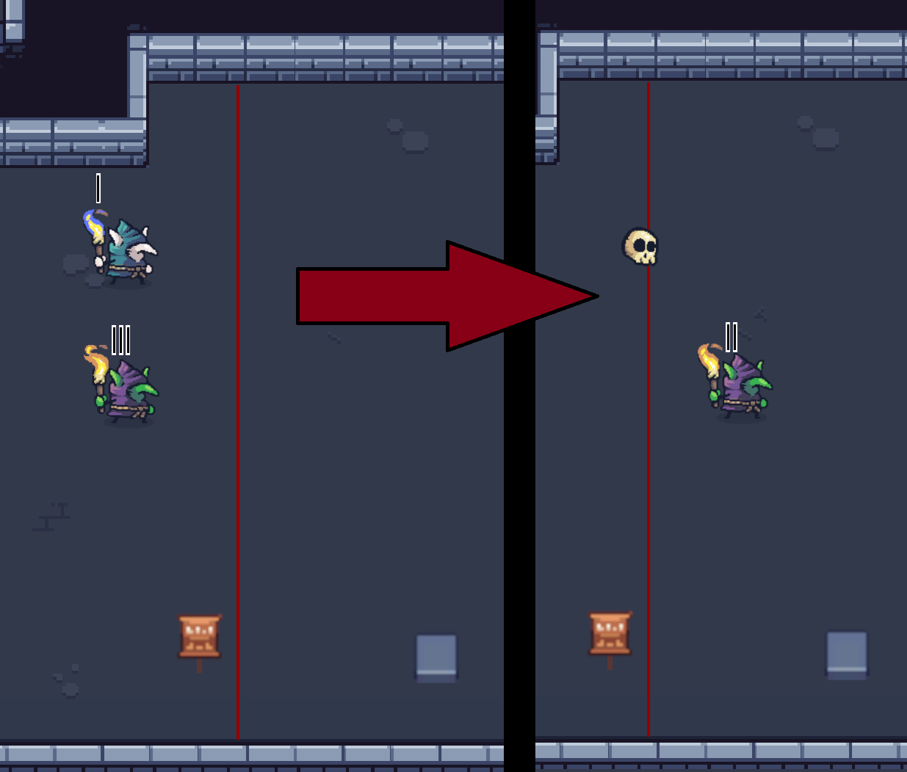
Minion Laser
If a minion passes through the red minion lasers, it immediately returns to the asleep state. The necromancer (player) can move freely through the minion lasers.
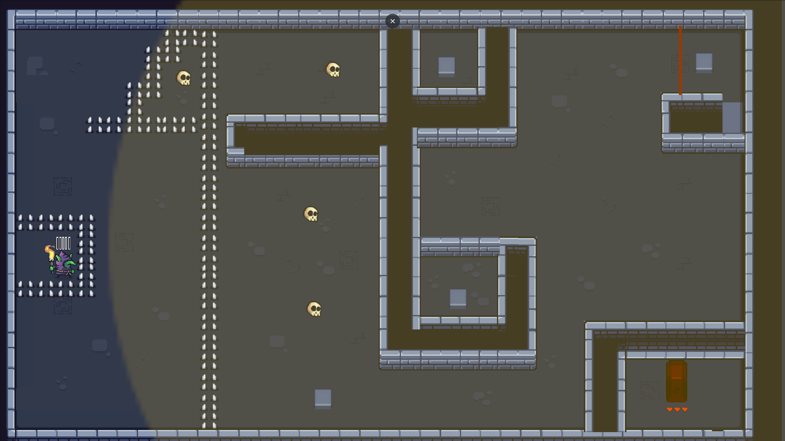
Projectile Block Zone
Once 4 projectiles (NecroNeedles) have entered the yellow zone, that yellow area locks itself off from the necromancer and creates a wall that blocks all further projectiles from the outside. The player must clear this level with 4 tactical and precise NecroNeedles.
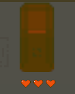
Activator Stone with Health
This activator stone can only be activated by shooting it with NecroNeedles. The number of NecroNeedles required to activate this activator stone is shown as hit points (number of hearts) below the stone.
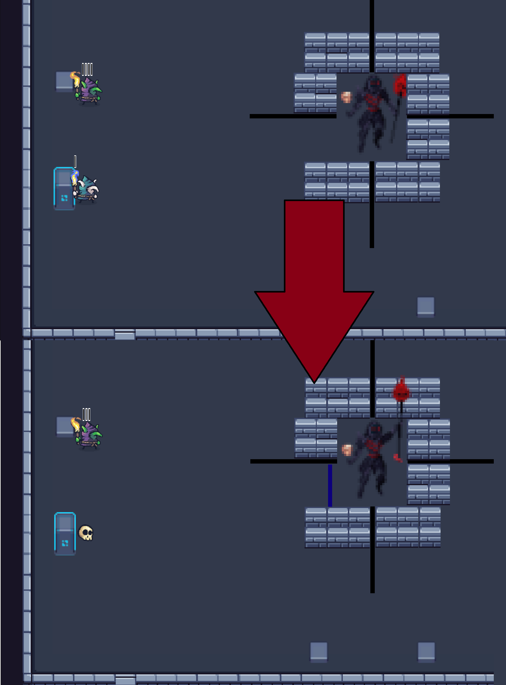
Final Boss
In the final boss room, there are 2 activator stones on each side (left, bottom, top, right). When an activator stone is activated, the corresponding next wall is disabled by the boss. If a minion passes through the resulting gap, the boss takes 1 damage and the used gap is sealed off by a projectile wall.
Level-Übersicht
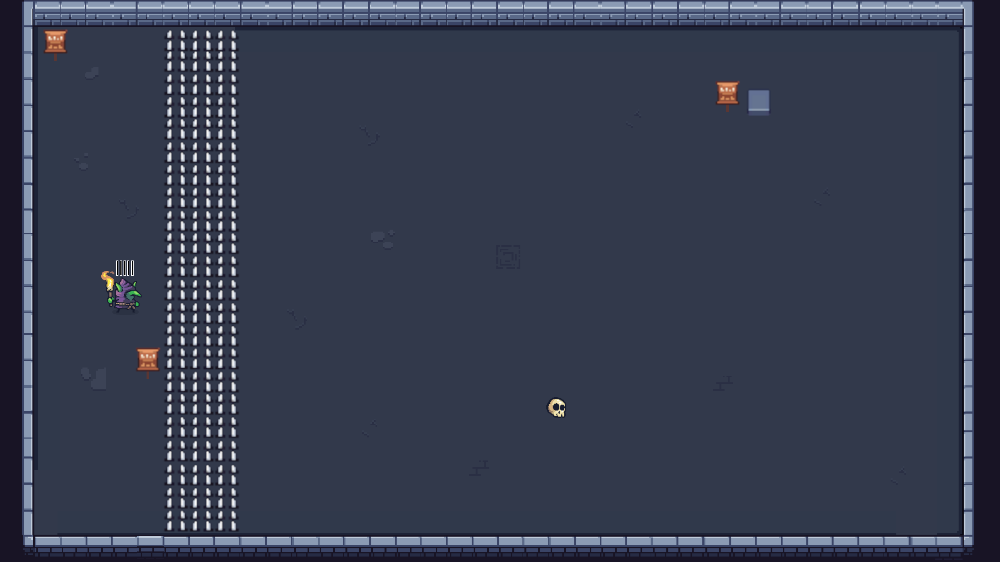
Level 1
Introduction to the awakening mechanic.
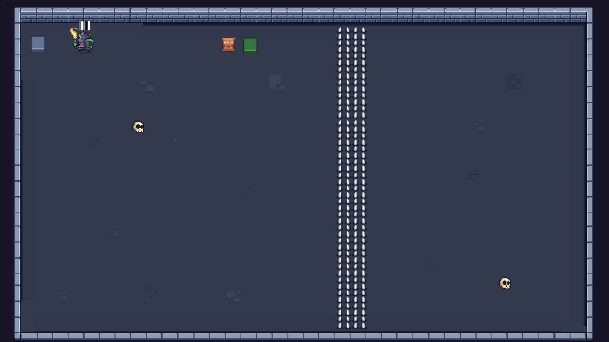
Level 2
Introduction to (green) activator stones with prerequisites.
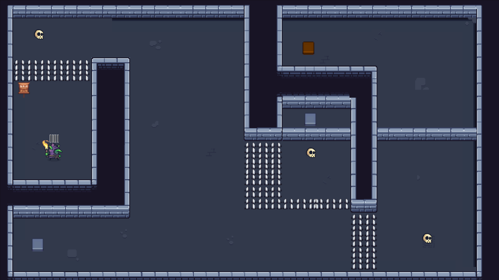
Level 3
Introduction to (orange) activator stones with 2 prerequisites. In addition, this level requires the player to stack multiple NecroNeedles in a minion for the first time in order to clear the level.
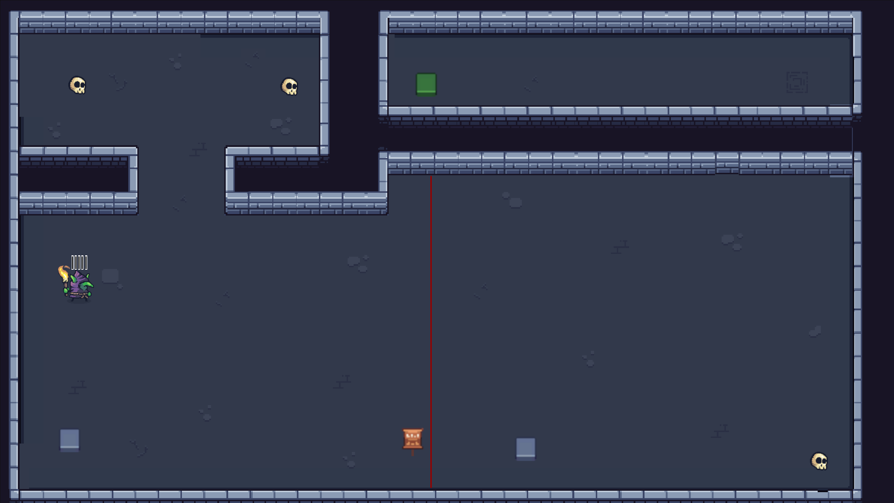
Level 4
Introduction to the minion laser mechanic.
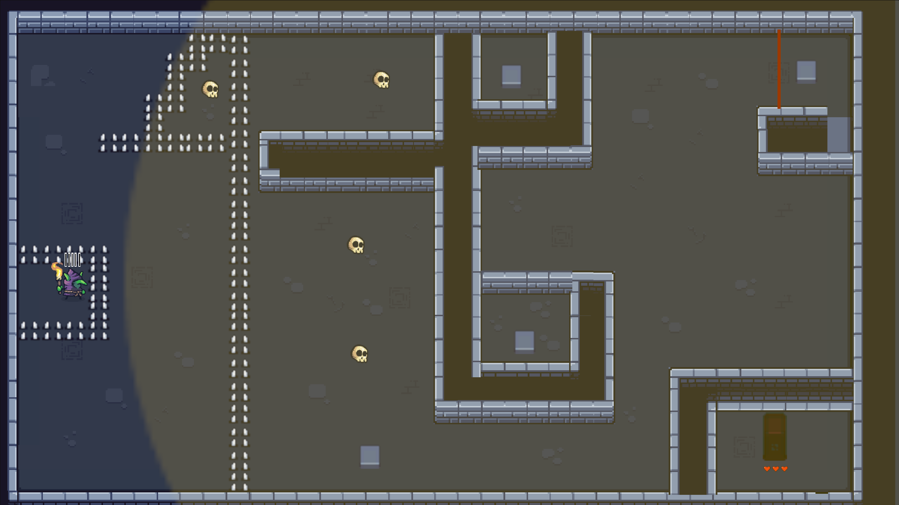
Level 5
Introduction to the projectile block zone and the activator stone with health.
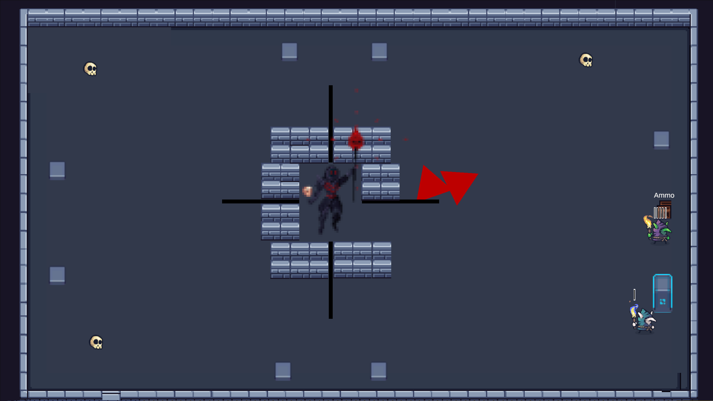
Boss-Level
In this level, the player can replenish their NecroNeedles at the “Ammo” box. Final level.
Challenge → Solution
- My personal challenge was that I often find puzzle games too repetitive. That set a high bar for me: the puzzles should not just work, they should feel fresh and varied. Instead of building many levels with the same mechanic, I introduced new mechanics intentionally for each level and combined existing ones:
- Level 1: Introduction of the awakening mechanic (minions activate stones).
- Level 2: Dependent activators — some stones require another stone to already be activated.
- Level 3: Barriers that “kill” minions — the player can pass through, but their minions cannot.
- Level 4: Zone with a shot limit (blocks after X projectile entries).
- Level 5: Combinations of barriers and activators that force alternative solutions.
- Level 6: Final boss with its own rules.
- This approach increased scope and testing effort, but the risk paid off: the gameplay flow felt more dynamic and we received very positive feedback during the jam. As a trade-off, I learned to prioritize mechanics intentionally and test early so that gameplay complexity does not blow up the schedule.
Learnings
In this project, I primarily learned how to manage time properly during a game jam. I set myself the goal of finishing the core gameplay 3 days before the deadline. From that third day before submission onward, I started polishing: adding sprites, implementing sound, creating more levels, and so on. Overall, this project was very successful and made me look forward to future game jams.